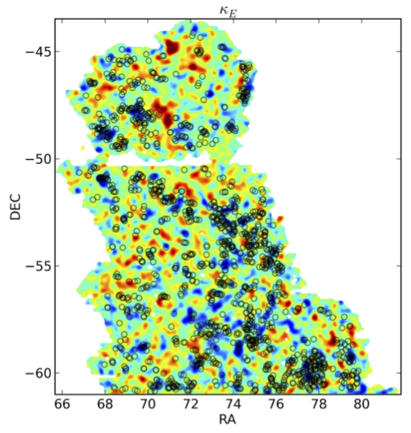

Weak Lensing by Galaxy Troughs in DES Science Verification Data
D. Gruen, O. Friedrich, A. Amara, D. Bacon, C. Bonnett, W. Hartley, B. Jain, M. Jarvis, T. Kacprzak, E. Krause7, A. Mana, E. Rozo, E. S. Rykoff, S. Seitz, E. Sheldon, M. A. Troxel, V. Vikram, and The DES Collaboration
Key figures from the paper:

Positions of 10 arcminute troughs overlaid on the convergence map
Weak lensing signal of galaxy troughs of 5, 10, 20 and 30 arcminute radius
Tangential shear signal for troughs and overdense cylinders
Correlation matrix around 10 arcminute troughs